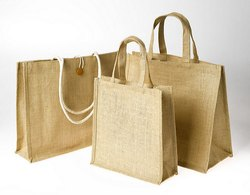
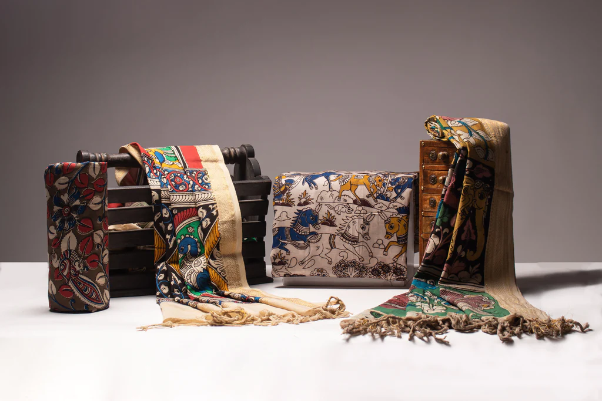
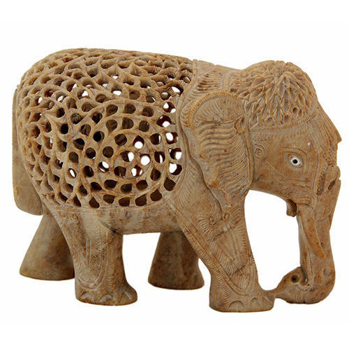

Our Products

BAMBOO PRODUCTS
Tripura is the largest producer of bamboo products. It is popular for its traditional cane & bamboo craft.Bamboo Crafts using bamboo as raw material.
Rural people in general are both producers and consumers of this product. Bamboo has manifold uses, its low cost making it the primary material for articles of everyday use such as stools, mats, baskets, traps as well as decorative items.
bamboo crafts

JUTE PRODUCTS
Jute craft is derived from the fibre of a reed-like plant. Jute is used chiefly to make cloth for wrapping bales of raw cotton, and to make sacks and coarse cloth. The fibers are also woven into curtains, chair coverings, carpets, area rugs.
The fibers are used alone or blended with other types of fiber to make ropes.Jute is widely used because of its low cost
jute crafts

CLOTH PRODUCTS
Textile art is an ancient type of art that has been carried on through different generations.Some examples are knitting, quilting, weaving, and dyeing. Many of these could also fall into the decorative or fashion crafts categories since the finished goods are often sold as sweaters or wall hangings.
Textile art could be a wall hanging, a clothing, or even a sculpture created with fabric.
cloth arts

STONE PRODUCTS
Stone Carving is an activity where pieces of rough natural stone are shaped by the controlled removal of stone. Owing to the permanence of the material, stone work has survived which was created during our prehistory.
List of things made of stone: metal and clay:Stone: Statues, toys, tools, beads, models, toys, machine, locks, keys, scissors.
stone arts